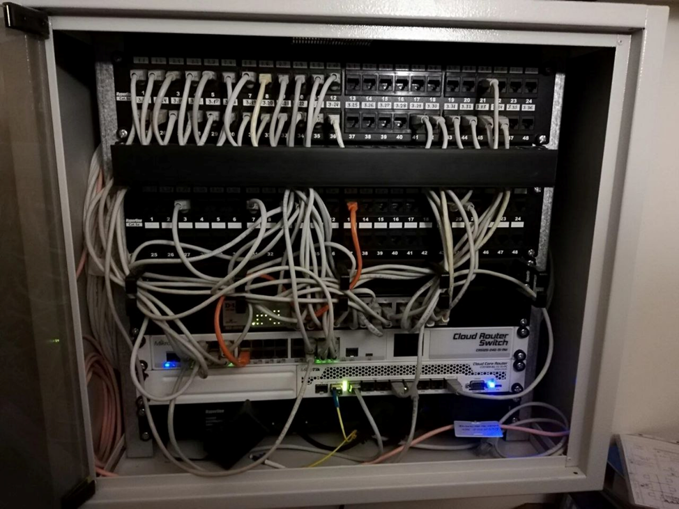
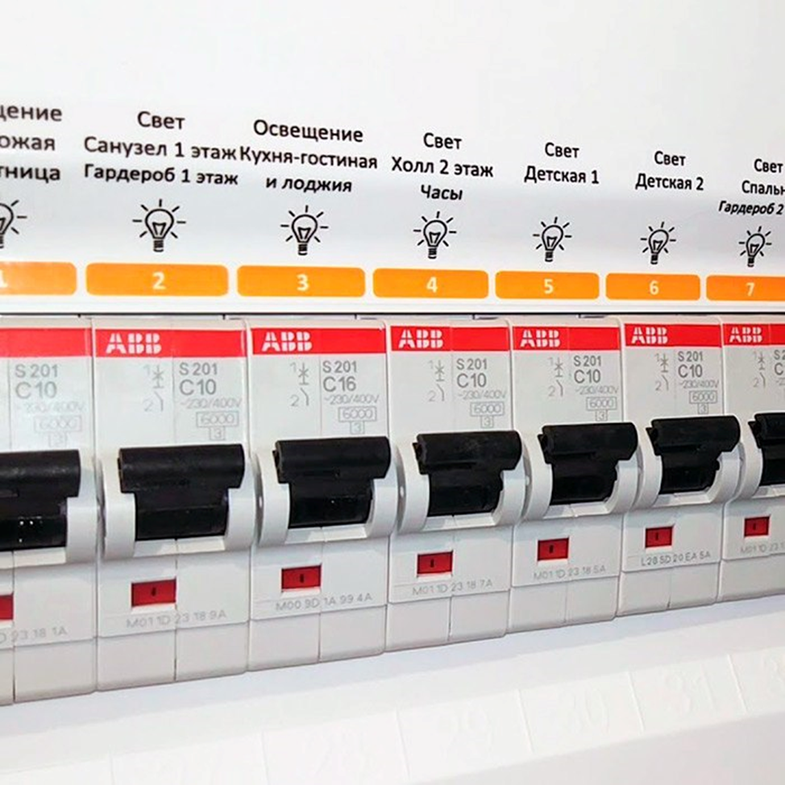

Адресация, узел, шкаф: основные понятия

Что такое адресация в слаботочных сетях
Адресация - это система обозначений (названий, кодов, идентификаторов), которая однозначно определяет каждый кабель, розетку, датчик, прибор и узел в системе.
Задача проектировщика: разработать интуитивно понятную, логичную и единую для всех подсистем структуру, которая связывает физическую инфраструктуру с документацией.
Представьте почтовую службу без почтовых индексов. Ваши письма никогда не дойдут до адресата. Точно так же без адресации сигналы в ваших системах будут блуждать, а при поиске неисправности монтажники будут проверять все 500 розеток подряд.
Уровни адресации
Адресация построена по принципу иерархии - от обозначения физического места в здании к конкретному компоненту оборудования. Эта иерархия состоит из нескольких уровней, каждый из которых служит уточнению предыдущего. Выделяют модели иерархии TCP/IP и OSI.
OSI - модель, которая описывает обмен данными. Она была создана, чтобы установить стандарт для разработки сетевых протоколов.
Модель OSI состоит из 7 уровней, каждый из которых отвечает за определенные функции. Подробнее мы рассмотрим в презентации:
| Уровень | Название | Функции | Адресация на этом уровне |
| 7 | Прикладной (Application) | Интерфейс для приложений (браузеры, почтовые клиенты) | URL, доменные имена |
| 6 | Представительский (Presentation) | Шифрование, сжатие, преобразование данных | Не имеет своей адресации |
| 5 | Сеансовый (Session) | Установление, поддержание и завершение сеансов связи | Не имеет своей адресации |
| 4 | Транспортный (Transport) | Надежная доставка данных между узлами | Порты (0-65535) |
| 3 | Сетевой (Network) | Маршрутизация данных между сетями | IP-адреса (IPv4/IPv6) |
| 2 | Канальный (Data Link) | Передача данных в пределах одной сети | MAC-адреса (48 бит) |
| 1 | Физический (Physical) | Физическая передача сигналов по среде | Не имеет адресации |
На практике чаще используется упрощенная модель TCP/IP, которая объединяет некоторые уровни OSI:
| Уровень TCP/IP | Соответствующие уровни OSI | Протоколы | Адресация |
| Прикладной | 7, 6, 5 | HTTP, FTP, SMTP, RTSP | URL, домены |
| Транспортный | 4 | TCP, UDP | Порты |
| Сетевой | 3 | IP, ICMP, ARP | IP-адреса |
| Канальный | 2, 1 | Ethernet, Wi-Fi | MAC-адреса |
Проектировщик внутренних систем взаимодействует с физическим уровнем в зависимости от типа систем по заданию от разработчиков.
Типы узлов в слаботочных системах
Узел - точка коммутации, распределения или перехода кабельных систем, в которой происходит одно из трёх событий: разветвление кабелей (от одного входящего кабеля - несколько исходящих), переключение или перераспределение сигналов, либо преобразование параметров сигнала или питания.
Узлы классифицируются по иерархическому уровню и функциональному назначению. Рассмотрим подробнее типы узлов, для удобства составили таблицу с примерами:
| Тип узла | Назначение | Установка | Пример |
| Главный распределительный шкаф (ГРЩ-СС) | Ввод в здание; основной коммутатор; питание всех остальных узлов | Техническое помещение, подвал, 1 этаж | Шкаф 2000×1000×600 мм, где стоит главный коммутатор, ИБП, опорное оборудование |
| Распределительный шкаф (РЩ-СС) | Промежуточный распределитель на этаже или зоне; питает розетки на участке | На каждом этаже или на каждые 500 м² | Шкаф на стене коридора, питает классы этажа |
| Шкаф вертикального распределителя (вертикальный стояк) | Только прохождение кабелей вверх-вниз между этажами | В шахте или в скрытой нише | Кабель идет снизу вверх, на каждом этаже - отвод в боковой шкаф |
| Концевой узел (розетка, прибор) | Конечная точка для пользователя | Стена комнаты, потолок, мебель | RJ-45 розетка для интернета, кнопка датчика сигнализации |
| Промежуточный повторитель | Усиление сигнала на длинных расстояниях | В техпомещении или РЩ-СС | PoE-инжектор для видеокамеры на 150 м от РЩ-СС |
Переход от определения типов узлов к конкретным стандартам адресации требует понимания, какие правила установлены нормативной базой. Стандартизация адресации обеспечивает совместимость между разными проектами и понимание между проектировщиками, монтажниками и эксплуатирующим персоналом.
Планирование адресации
Стандартная система адресации для структурированной кабельной системы (СКС)
Это наиболее распространенная и логичная система. Её можно использовать, если нет других требований.
Схема адресации:
Здание→Зона/Этаж→ШКФ→ПОРТ
Расшифровка:
| Часть кода | Значение | Пример |
| ЗДАНИЕ | Буквенный или цифровой код здания (если их несколько на объекте) | А, Б, В или 1, 2, 3 |
| ЗОНА/ЭТАЖ | Номер этажа или зоны (с нулевой индексацией или классической) | 1, 2, 3 или 01, 02, 03 (для жилых) или Ю, С, В, З (для зон по сторонам) |
| ШКФ | Номер распределительного шкафа на этаже | 1, 2, 3 или РЩ-1, РЩ-2 |
| ПОРТ | Номер порта в шкафу (розетки или выхода коммутатора) | 1, 2, 3, ..., 48 |
Примеры реальных адресов:
- А-2-1-15 = Здание А, 2 этаж, шкаф 1, порт 15.
- 03-РЩ-02-23 = 3 этаж, распределительный щит 2, розетка 23.
- ГРЩ-СС-1-08 = Главный распределительный щит, слаботочный, первый вход, 8-й контакт.
Альтернативные системы адресации (для больших объектов):
Схема для системы A (по физическим местам):
ЗДАНИЕ→ЭТАЖ→СЕКТОР→ПОМЕЩЕНИЕ→РОЗЕТКА
Пример: А-2-С-204-1
Здание А, 2 этаж, Сектор С (западный корпус), помещение 204 (класс), 1-я розетка в помещении.
Схема для системы B (по функциональным зонам + иерархия):
ФУНКЦИЯ→ЗОНА→ПОДЗОНА→УЗЕЛ→ПОРТ
Пример: ИНТ-СХ-ЭТ2-РЩ-15 = Интернет (ИНТ), школа (СХ), этаж 2 (ЭТ2), распределительный щит (РЩ), порт 15.
Какую систему выбрать
Зависит от объекта. Для офисного здания подойдёт стандартная схема. Для больниц, аэропортов, ТЦ - функциональная.
Планирование нумерации портов в шкафу
Стандартный коммутатор (Switch) имеет 24 или 48 портов. Каждый порт должен быть пронумерован логично, чтобы специалист быстро мог найти нужный кабель.
| Размер коммутатора | Нумерация | Направление | Пример |
| 24 порта | 1-24 | Слева направо (как читаем текст) | Порты 1-12 сверху, 13-24 снизу |
| 48 портов | 1-48 | Слева направо, сверху вниз | Порты 1-24 верхний ряд, 25-48 нижний ряд |
| Стакируемые коммутаторы (несколько блоков) | НОМЕР_БЛОКА-НОМЕР_ПОРТА | По блокам | 1-1 до 1-48 (блок 1), затем 2-1 до 2-48 (блок 2) |

Планирование адресации для систем видеонаблюдения
IP-видеосистема:
Каждая видеокамера имеет уникальный IP-адрес (в диапазоне 192.168.1.0/24 или 10.0.0.0/8).
Схема адресации:
ПРЕФИКС→ТИП_КАМЕРЫ→НОМЕР
Рассмотрим, как ее применять на нескольких примерах:
CAM-FRONT-01 = Камера фасадная, номер 1
CAM-CORR-02 = Камера коридор, номер 2
CAM-GYM-01 = Камера в спортзале, номер 1
Также у каждой камеры есть своя IP-адресация. Например:
| Камера | IP-адрес | Описание |
| CAM-FRONT-01 | 192.168.1.101 | Вход (фасад) |
| CAM-FRONT-02 | 192.168.1.102 | Вход (фасад) |
| CAM-CORR-01 | 192.168.1.201 | Коридор 2 этажа |
| CAM-CORR-02 | 192.168.1.202 | Коридор 2 этажа |
| CAM-GYM-01 | 192.168.1.301 | Спортзал |
IP-адреса начинаются с 100, 200, 300 для разных зон. Это упрощает поиск и масштабирование.
Планирование адресации для охранной-тревожной сигнализации (ОТС)
Комплекс охранно-тревожной сигнализации оповещает службу охраны, оператора пульта управления о взломе или проникновении в здание, помещение, где установлены датчики, которые фиксируют всю информацию и автоматически включают звуковое или световое оповещение.
Аналоговые системы охранной сигнализации используют шлейфы - линии, к которым подключены несколько датчиков параллельно. На один приёмно-контрольный прибор (ПКП) может быть подключено 4-16 шлейфов, на каждом шлейфе - 10-20 датчиков. Рассмотрим подробнее аналоговую охранную систему:
1. Каждый датчик подключен к отдельному входу приемно-контрольного прибора (ПКП).
2. Схема адресации выглядит следующим образом: ПКП→ЗОНА→НОМЕР
Рассмотрим на примерах схему адресации:
ПКП-1-ВХОДНЫЕ-01 = ПКП номер 1, зона входные двери, датчик 1
ПКП-1-ОКНА-01 = ПКП номер 1, зона окна, датчик 1
ПКП-2-КОРИДОР-01 = ПКП номер 2, зона коридоры, датчик 1
Максимум на один шлейф обычно приходится по 15-20 датчиков (в зависимости от типа ПКП и датчиков). При большем количестве нужно добавлять дополнительные шлейфы.
Теперь перейдем к цифровой (адресной) охранной системе.
Адресные (цифровые) системы охранной сигнализации - это системы, в которых каждый датчик имеет уникальный цифровой адрес (0-255), и при его срабатывании система точно знает, какой датчик и где сработал.
Интересный опыт: В настоящее время принято считать, что на объектах малой площади лучше применять неадресные системы, так как это дешевле и нет необходимости в охране конкретных помещений. А на объектах средней и больших площадей применяют адресные цифровые системы для обеспечения быстрого реагирования и невозможности обойти небольшое число датчиков.
Каждый датчик системы имеет свой уникальный адрес (0-255). Примеры показали в таблице:
| Адрес | Зона | Помещение | Тип датчика |
| 1-10 | Входные двери | Вход здания | Магнитный контакт |
| 11-30 | Окна 1 этажа | Классы 101-115 | Магнитный контакт |
| 31-50 | Окна 2 этажа | Классы 201-215 | Магнитный контакт |
| 51-70 | Движение | Коридоры | Датчик движения |
| 71-100 | Движение | Спортзал, столовая | Датчик движения |
Преимущество адресных систем: точная локализация события, до 255 датчиков на один ПКП (против 40-50 в аналоговой), легче расширяемость. Недостатки: дороже в цене, сложнее в настройке, требует квалифицированного персонала.
Проектирование и параметризация узлов распределения
Планирование расположения шкафов
Теперь рассмотрим подробнее какие есть типы шкафов и какого размера они бывают.
1. Главный распределительный шкаф (ГРЩ-СС). Главный распределительный щит слаботочный (ГРЩ-СС) - это центральный узел всей слаботочной сети объекта, в котором происходит ввод сигналов от внешних провайдеров (интернет, спутниковое телевидение, городская сеть передачи данных), основное коммутирование и распределение на этажи, обеспечение резервного питания при отключении сетевого электроснабжения, а также интеграция специализированных систем (видеонаблюдение, охранная сигнализация, CCTV).
В таблице привели его основные параметры.
| Параметр | Значение | Примечание |
| Размер (В×Ш×Г) | 2000-2400 × 1000-1200 × 600-800 мм | Вмещает все оборудование здания |
| Стандарт монтажа | 19" рэковая система (ширина 483 мм) | Позволяет монтировать оборудование в стойки |
| Количество юнитов (U) | 42U, 45U, 48U | 1U = 44.45 мм высоты |
| Вес (пустой) | 150-300 кг | Требует укрепленного основания |
| Вес с оборудованием | 300-500+ кг | Нужна консультация конструктора |
| IP-класс защиты | IP20, IP55 (если в грязной среде) | IP20 - для чистых техпомещений |
| Тип монтажа | Напольный, настенный (для маленьких) | Напольные - для крупного оборудования |
2. Распределительный щит этажа (РЩ-СС)
Распределительный щит слаботочный этажа (РЩ-СС) - это промежуточный узел, устанавливаемый на каждом этаже объекта. Его основная функция - принять сигналы от главного распределительного щита и распределить их на локальную зону (этаж, сектор) для питания розеток интернета, видеокамер, датчиков охраны и других слаботочных устройств.
РЩ-СС - это не просто уменьшенная копия ГРЩ. Это специализированный узел, оптимизированный для локального распределения на площади 100-500 м² при условии, что расстояние до дальнейшей розетки не превышает 100 метров (ограничение на длину кабеля витой пары по стандарту).
Габаритные параметры РЩ-СС приведены в таблице:
| Параметр | Значение | Примечание |
| Размер (В×Ш×Г) | 600-800 × 400-600 × 200-300 мм | Компактнее, чем главный щит |
| Стандарт монтажа | 19" рэковая система (опционально) | Часто просто вешается на стену |
| Количество юнитов (U) | 6U-12U | Хватает для 1-2 коммутаторов на 24-48 портов |
| Вес (пустой) | 30-50 кг | Вешается на анкерные болты |
| Тип монтажа | Настенный | На коридоре или в техпомещении этажа |
Места установки шкафов
В таблицах рассмотрели в каких местах и почему стоит устанавливать шкафы в зависимости от их типа.
Главный распределительный шкаф (ГРЩ-СС):
| Место | Подходящее место установки | Преимущества | Ограничения и недостатки |
| Техническое помещение на 1 этаже | Да | Централизованное размещение; лёгкий доступ для техперсонала; защита от посторонних; контроль температуры и влажности | Требуется предварительная подготовка помещения (вентиляция, укреплённый пол, электроснабжение); нужны отверстия в полу/потолке для вертикальных кабелей |
| Подвал | Да | Не занимает полезную площадь здания; защищено от людей; часто есть готовое помещение | Если подвал сырой или затапливается - необходима осушка; далеко до верхних этажей (длинные кабели, большие потери); трудный доступ зимой/в грязь |
| Чердак /техэтаж (между этажами) | Да | Близко к центру здания; экономия кабеля | Температурные экстремумы в летние и зимние дни (-40...+50°C летом); опасность при монтаже; трудный доступ, так как часто является узким помещением |
| Коридор 1 этажа | Условно возможно | Видимость - легко найти; не требует специальных помещений | Шумно; видно всем; большой шкаф может загромождать коридор |
| На крыше в электрошкафе | Не допускается | - | Экстремальные температурные колебания (-40°C зимой, +50°C летом); образуется конденсат из-за суточных колебаний; оборудование быстро выходит из строя за 2-3 года; сложное обслуживание, возможны замыкания |
Распределительные щиты этажа (РЩ-СС):
| Место | Подходящее место установки | Примечание |
| В шкафу на стене коридора | Да | Центральное расположение даёт минимальную разницу расстояний до самых дальних розеток; щит видно всем и легко находится; логичное место для техперсонала |
| В небольшом техпомещении на этаже | Да | Если есть отдельная комната; необходима вентиляция |
| На потолке (в навесном потолке) | Условно возможно | Экономит видимое пространство; но очень трудный доступ - требуется стремянка при каждом техническом обслуживании; опасно для людей, если щит упадёт |
| За подвесным потолком в коридоре | Не допускается | Сложность доступа; опасность для людей при открытии, затруднено техническое обслуживание; невозможно ремонтировать без разбора потолка |
| Внутри класса на стене | Не допускается | Электромагнитное загрязнение; шумовое загрязнение от оборудования; занимает учебное/рабочее пространство; недопустимо в классах, кабинетах |
Маркировка портов и кабелей
Каждый порт коммутатора должен иметь неподвижную, устойчивую к влаге и времени маркировку (наклейку), которая указывает адрес этого порта в системе адресации. Без маркировки специалист будет угадывать, какой порт к чему подключен, и вероятность ошибки очень высока.
На наклейке должна содержаться информация, которая позволит техническому персоналу за несколько секунд понять, зачем этот порт, что к нему подключено и куда ведёт кабель. Пример такой маркировки приведен на картинке. Чаще всего в проекте закладывают данные наклейки.

Система цветовой кодировки (опциональная, но рекомендуемая)
Цветовая кодировка наклеек позволяет специалисту за доли секунды понять, к какой системе относится порт, ещё до прочтения текста. Это особенно полезно при поиске конкретного порта в щите с 48-96 портами.
| Цвет фона наклейки | Система/назначение | Практическое применение |
| Красный | Интернет (структурированная кабельная система СКС) | Все розетки интернета для компьютеров, принтеров, мониторов |
| Синий | Видеонаблюдение (IP-камеры, PoE питание) | Порты, подключённые к видеокамерам |
| Жёлтый | Охранная сигнализация (датчики, магнитные контакты, ПКП) | Порты и линии охранной системы |
| Зелёный | Резервные/свободные порты | Порты, которые не задействованы и ждут расширения |
| Чёрный | Питание и служебные линии (ИБП, резерв питания) | Резервные линии питания, служебное оборудование |
Ключевые принципы, которые нужно запомнить:
Совет 1: Согласуйте адресацию с Заказчиком до монтажа
Если Заказчик захочет изменить адресацию после монтажа, это может стоить 10-20% от стоимости проекта.
Совет 2: Используйте цветовую кодировку
Например:
- Красные наклейки - интернет.
- Синие наклейки - видеокамеры.
- Желтые наклейки - охрана.
- Зеленые наклейки - резервные.
Специалист найдет нужный кабель в 2 раза быстрее.
Совет 3: Оставляйте запас портов
Всегда выбирайте коммутатор на 1-2 размера больше, чем нужно. Это обходится в 30% дороже, но окупается, когда надо быстро добавить новую систему.
Совет 4: Документируйте изменения
Если во время монтажа место монтажа кабеля изменилось, обновите документацию. Иначе через год никто не разберется, где его нужно было монтировать.